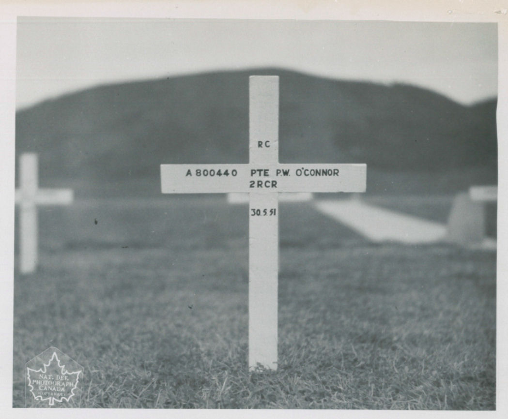

Poem of War, The Korean War...
Indexed Poem:
Tis the blood of the brave and true.
Where the 25th Brigade battled together
Under the banner of the Red, White and Blue.
As they marched over the fields of Korea
To the hill where the enemy lay.
They remembered the Brigadiers orders:
"These hills must be taken today."
Forward they marched into battle
With faces unsmiling and stern.
They Knew as they charged the hillside
That some would never return.
Some thought of their wives and mothers,
Some thought of their sweethearts so fair
And some as they plodded and stumbled,
Were reverently whispering a prayer.
There is blood on the hills of Korea,
It is the gift of freedom they love,
May their names live in glory forever,
And their souls rest in heaven above.
In the field, Korea
May 29, 1951

-
The above poem was composed
by Private Patrick J. O'Connor, he was apart of the 25th U.S.
Infantry Division. He was killed in action in the attack on
Hill 466 on May 30, 1951. Pat was a man of poetry and had just
finished his poem "Korea" just the night before, little
knowing that he had less than 24 hours to live. The poem was
found among his personal effects the next day. Pat was in
action only five days when he was killed on May 30, 1951.
My take on history: This was just written days before he fell in the battle for Korea. He was a poet and he only lasted 5 days fighting for his country. Patrick J. O'Connor while unknown to the majority of us citizens still cemented a legacy for us and his wife Vera Irene, not as a fighter but as a poet that was the last thing he did before rushing up that Hill, Hill 466. 24 hours can make all the difference, it can change the course of history forever in wildest of ways.
He battled the bloody price of freedoms blissful touch.
"They Knew as they charged the hillside
That some would never return"
He knew that some wouldn't tell the tales of Hill 466 but knew not that he would be one of them.
"Where the
25th Brigade battled
together
Under the banner of the Red, White and Blue."
He was part of the 25th Brigade serving the USA even
though his homeland was of Canadian origin
"As they marched over the fields of Korea
To the hill where the enemy lay.
They remembered the Brigadiers orders:
"These hills must be taken today."
He knew that this was there big moment, one big push to take over the Hill today there is no time to let enemy hands further taint the sacred land.
And that was his poem a poem of a legacy short lived,
he died at age 27, On that lone hill of 466 leaving his
wife widowed, and cementing him one of my favorite poets,
not for the words, but the context of those words, his
death boosts this poem to my favorite it tells the tale of
war so perfectly all opportunity stopped short. He could
have been anything in a world of uncertainty, but he
choose to be a fighter.
The more I research and read his story the more I
think about our freedom as a country. Our freedom is a
deadly one, one not taken with kindness but hope, forged
through the slaying of great evils. Lets not forget what
we stand for...
This page remembers who have fallen to war for our
freedom not just this dude but to everyone who has fallen
for our Republic. As a nation we need to spend more time
remembering what our core values are -it is one of freedom
no matter the cost, no matter the odds against us we will
prevail. Even though some may fall many will prosper and
have children be ignorant to how blissful our freedom is.
Isn't that the goal of any society to have children
unaware by life's brutal torment?
To be happy no matter the situation?
To be free to hurt himself to learn to grow to
prosper?
He fought so we could run we completely freed half a
nation from its communist holders just because we looked
at one side and we thought it needed more freedom and less
totalitarian control.
He was a true Gun slinging God fearing Freedom loving
American.
Even though he was syrup drinking poutine eating
Canadian and none of this really applies.
Freedom at all costs no matter the odds. That is why America is so great.

His poem, Him and His Wife, And Finally His resting ground...
Before I go wanted to share more about his death, and
I could not say it better then the wonderful people from
Sarnia Historical Society you can check them out using
this link:
“Patrick O’Connor was fatally wounded on “Hill 466”
in Korea while trying to render first aid to a wounded
comrade under intense machine gun fire from Communist
forces. He and another stretcher-bearer ignored danger in
their desire to help the wounded of the Royal Canadian
Regiment. The two men were killed almost instantaneously.”
“On the day Pat was killed, my platoon was leading an
attack on ‘Hill 466’. Half way up the mountain my forward
section came under intense fire which killed two and
wounded four others. Pat and his partner came running up
the hill to get the wounded but another burst of fire hit
them both. He died as he had lived, trying to aid others
with his wonderful unselfishness.”
That is all! Enjoy your freedom whilst it lasts! Cause like everything in life nothing good lasts forever...
Home HTMLclock Files Poem